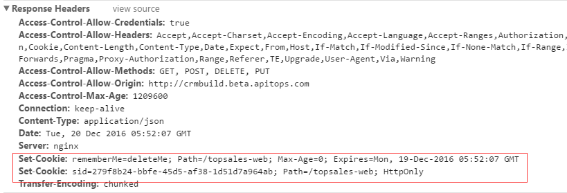
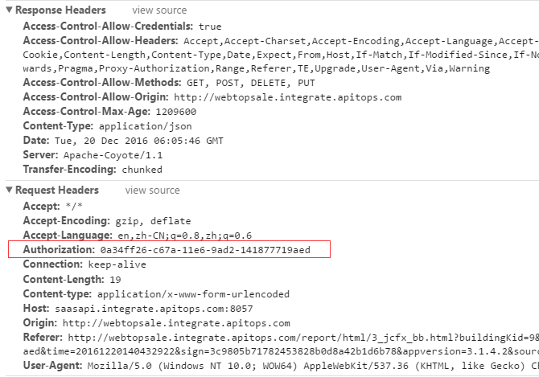

身份认证(Cookies vs Tokens)
常用身份验证有两种方式：
- cookies
- token

Cookies
- cookies是stateful
- 不需要前端存储
- 有CSRF(跨站点伪造请求)风险
- 移动端用在使用cookie时有各种不便利和局限
- Cookie可以在同一域名下或者同一主域不同子域下共享，一旦跨主域，就无法共享
认证信息在服务端和客户端都需要存储（通常情况下）。服务端通过reponse: Set-Cookie头信息为客户端设置cookie。

一般，客户端不需要做特殊配置，浏览器会在后续的ajax请求中自动带上cookie。
如果是跨域，jsonp请求默认挂cookie，CORS要特殊处理。
Tokens
- Token是stateless
- 需要前端存储(建议用
localstorage) - 无CSRF风险
- 适合移动端身份认证
- token支持各类跨域
前端代码：
// JS
var res = new XMLHttpRequest();
...
req.setRequestHeader('Authorization',accesstoken);
// JQuery
$.ajax({
url: api,
type: "GET",
headers: { "Authorization": "Bearer " + token}
})
HTTP请求
